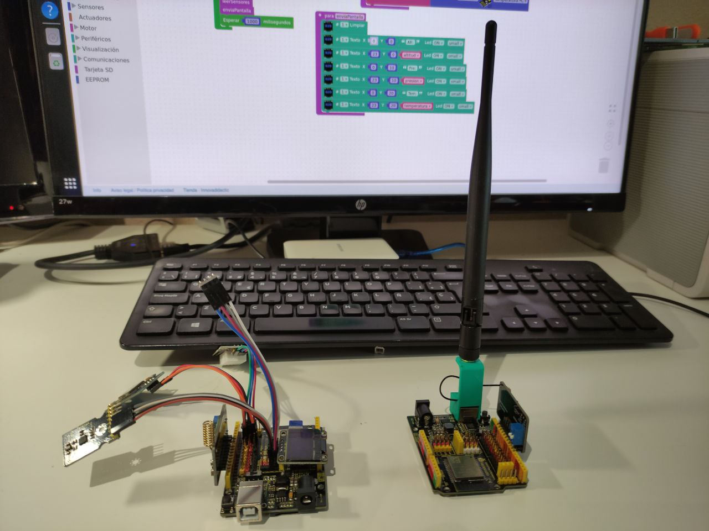

Definición
Un sistema de control automático o automatismo, es un conjunto de elementos técnicos que unidos son capaces de realizar una series de acciones para resolver un problema sin intervención humana.
Los que vamos a usar en nuestro curso son programados, que significa que el automatismo funcionará dependiendo de un programa que lo haremos a medida de la función a realizar.
En nuestro caso vamos a realizar un emisor de datos de sensores que será nuestro satélite y un receptor de datos y graficador de los mismos situado en tierra.
